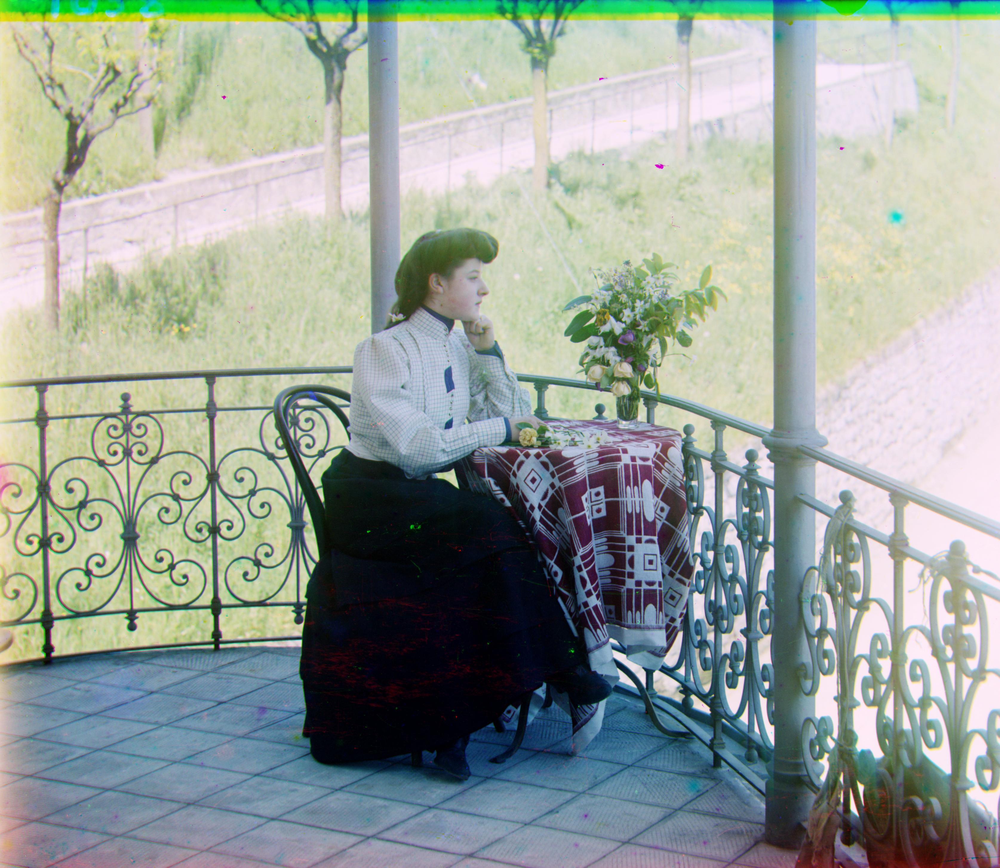

Project 1: Prokudin-Gorskii Image Alignment
Overview
The goal of this project is to take the digitized glass plate negatives from Sergei Prokudin-Gorskii's collection and automatically produce a color photograph. Each negative consists of three grayscale exposures (Blue, Green, and Red) stacked vertically. The core task is to split these channels and align them to reconstruct the original color image.
My Approach
To align the channels, I implemented a multi-scale image pyramid algorithm. This coarse-to-fine approach is efficient, especially for the high-resolution .tif images. Here's a breakdown of the process:
- Channel Splitting: The input image is divided into three equal vertical parts, corresponding to the Blue, Green, and Red channels.
- Image Pyramid Alignment: A recursive function builds an image pyramid for the B, G, and R channels. It finds the optimal displacement at the coarsest scale and progressively refines this estimate at finer scales. This avoids a prohibitively slow exhaustive search on the full-resolution image.
- Similarity Metric: The Sum of Squared Differences (SSD) is used to score how well two channels match at a given displacement. To improve accuracy, the metric is calculated on the central 60% of the image, ignoring the noisy borders.
Bells & Whistles
- Automatic Contrast: The image's intensity values are stretched to enhance visual contrast. This is done by mapping the 2nd and 98th percentiles of pixel brightness to black and white, respectively, which makes the adjustment robust to outlier pixels.
- Automatic White Balance: I used the "gray world" algorithm, which assumes the average color of a scene is gray. It scales the R, G, and B channels so their average intensities are equal, correcting for color casts.
- Automatic Cropping: To remove the distracting colored borders caused by misalignment, a simple 5% border is cropped from all sides of the final image.
Results Gallery
cathedral.jpg
Displacements: G(y,x) = (5, 2), R(y,x) = (12, 3)
church.tif
Displacements: G(y,x) = (25, 4), R(y,x) = (58, -4)
emir.tif
Displacements: G(y,x) = (49, 24), R(y,x) = (61, 43)
harvesters.tif
Displacements: G(y,x) = (59, 17), R(y,x) = (123, 14)
icon.tif
Displacements: G(y,x) = (41, 17), R(y,x) = (89, 23)
italil.tif
Displacements: G(y,x) = (38, 21), R(y,x) = (77, 35)
lastochikino.tif
Displacements: G(y,x) = (-3, -2), R(y,x) = (75, -9)
lugano.tif
Displacements: G(y,x) = (41, -16), R(y,x) = (93, -29)
melons.tif
Displacements: G(y,x) = (81, 10), R(y,x) = (178, 14)
monastery.jpg

Displacements: G(y,x) = (-3, 2), R(y,x) = (3, 2)
self_portrait.tif
Displacements: G(y,x) = (78, 29), R(y,x) = (176, 37)
siren.tif
Displacements: G(y,x) = (50, -5), R(y,x) = (97, -24)
three_generations.tif
Displacements: G(y,x) = (52, 14), R(y,x) = (111, 12)
tobolsk.jpg

Displacements: G(y,x) = (3, 3), R(y,x) = (7, 3)
cathedral.jpg

Displacements: G(y,x) = (5, 2), R(y,x) = (12, 3)
church.tif
Displacements: G(y,x) = (25, 4), R(y,x) = (58, -4)
emir.tif
Displacements: G(y,x) = (49, 24), R(y,x) = (61, 43)
harvesters.tif
Displacements: G(y,x) = (59, 17), R(y,x) = (123, 14)
icon.tif
Displacements: G(y,x) = (41, 17), R(y,x) = (89, 23)
italil.tif
Displacements: G(y,x) = (38, 21), R(y,x) = (77, 35)
lastochikino.tif
Displacements: G(y,x) = (-3, -2), R(y,x) = (75, -9)
lugano.tif
Displacements: G(y,x) = (41, -16), R(y,x) = (93, -29)
melons.tif
Displacements: G(y,x) = (81, 10), R(y,x) = (178, 14)
monastery.jpg

Displacements: G(y,x) = (-3, 2), R(y,x) = (3, 2)
self_portrait.tif
Displacements: G(y,x) = (78, 29), R(y,x) = (176, 37)
siren.tif
Displacements: G(y,x) = (50, -5), R(y,x) = (97, -24)
three_generations.tif
Displacements: G(y,x) = (52, 14), R(y,x) = (111, 12)
tobolsk.jpg

Displacements: G(y,x) = (3, 3), R(y,x) = (7, 3)